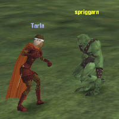
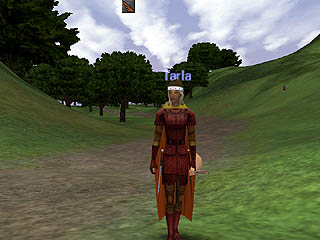

A farmer along the way warned me of swine from beyond the grave, but those accursed fields held no attraction for me (though the stableboy had a nice turn of chin). The weather had me nearly forgetting my search for dear Ahmid. When I returned to Ludlow, the finery I was able to purchase with my bits of silver and copper garnered in the defense of Prydwen Keep more than lifted my mood. The dyemaster colored my armor in the family colors of red and gold, and I even had enough left to order a fancy gown from the seamstress, should I ever be asked to court.
Young cutpurses and spriggarns harried the  farmers in the fields, and I was enlisted to help clear out that nest of scoundrels. More than once, my spirit was released to the Ludlow marker, but the bandits could not long stand against the united townspeople. When I reported to my roguish master to receive more training, he said I had learned all he had to teach, and now I would have to choose a different path; would I train as a scout, whose skill lies in stealth? Or that of an infiltrator, who strikes deep into enemy territory? Or perhaps my path lied in the minstrelry, strengthening those near me with the power of magical song.
I considered myself no assassin, so I could not choose the infiltrator's life. A scout could perhaps more easily search for her brother; but I could not do this alone. Mother had taught us the songs and legends of our desert homeland, and I thought those could prove useful here in the north. So I was sent to the minstrel master to learn my trade. He welcomed me into the minstrel guild and gave me a Lute of the Initiate with which to study. He showed me some simple chords to urge people to greater swiftness and healing, and taught me a secret shout with the power to harm.
 I practiced my skills on the bandits in the area, but decided in the end to return to Prydwen to replenish my very empty wallet. The journey back went much faster than the journey from, thanks to the clear skies and the traveling song I'd been taught.